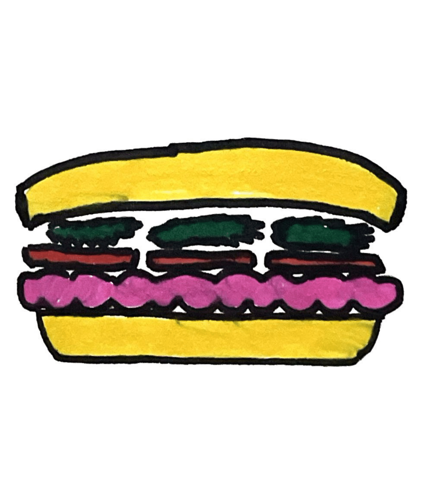
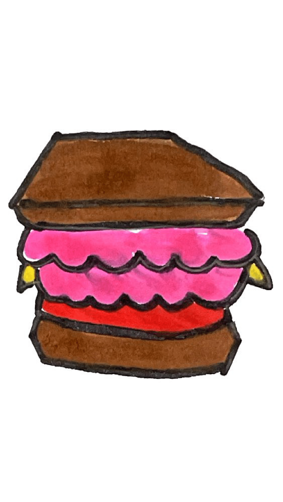
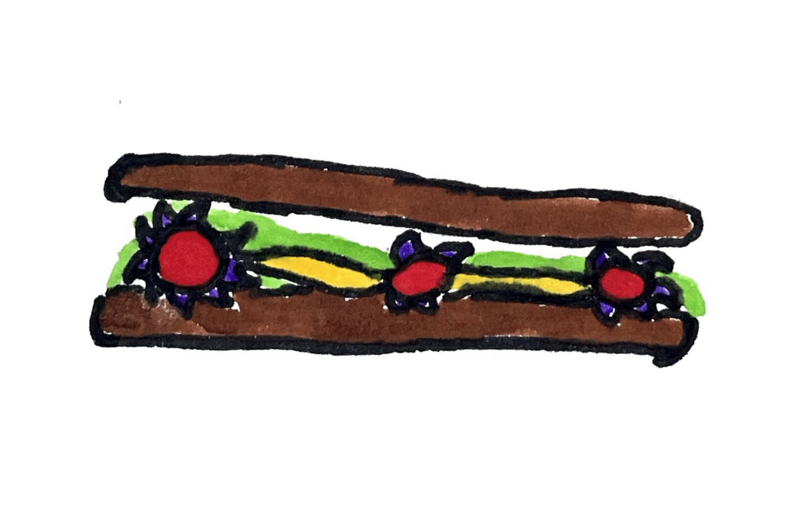

The Dining Dead: Sandwiches
Brocas Brains Letuce Tomato

Brocas special and savory Brains, Lettuce, and Tomato sandwich will leave you at a loss for words!
The Homeoburger

Two handcut and grilled hypothalamus patties complimented with a tomato and slice of cheese, all between grilled sesame buns.
The Signal Sandwich

This energizing snack makes the perfect pre-game meal, especially when complimented by our Controlling Concoction.